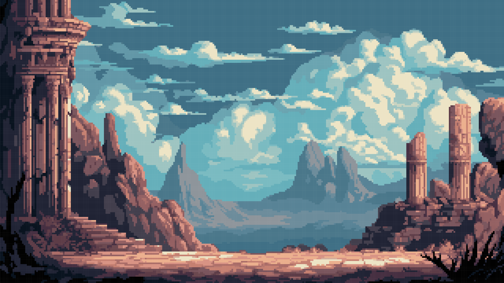
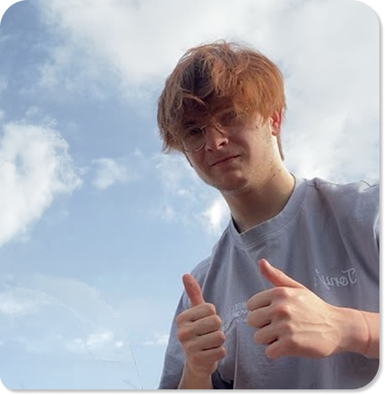
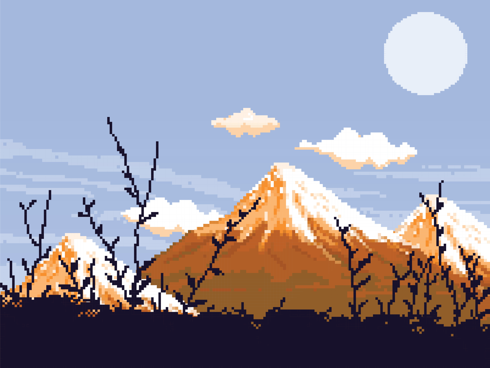
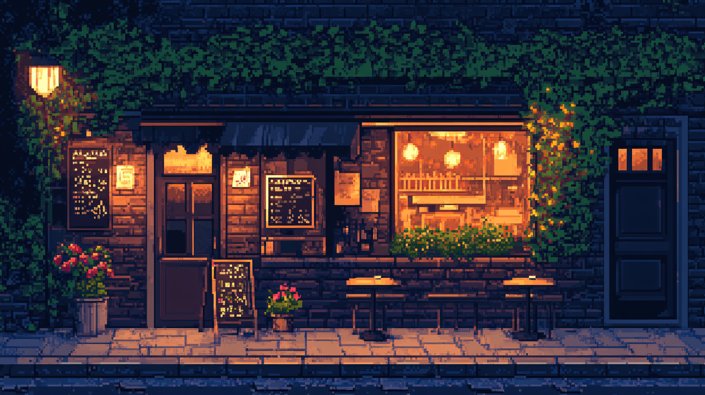
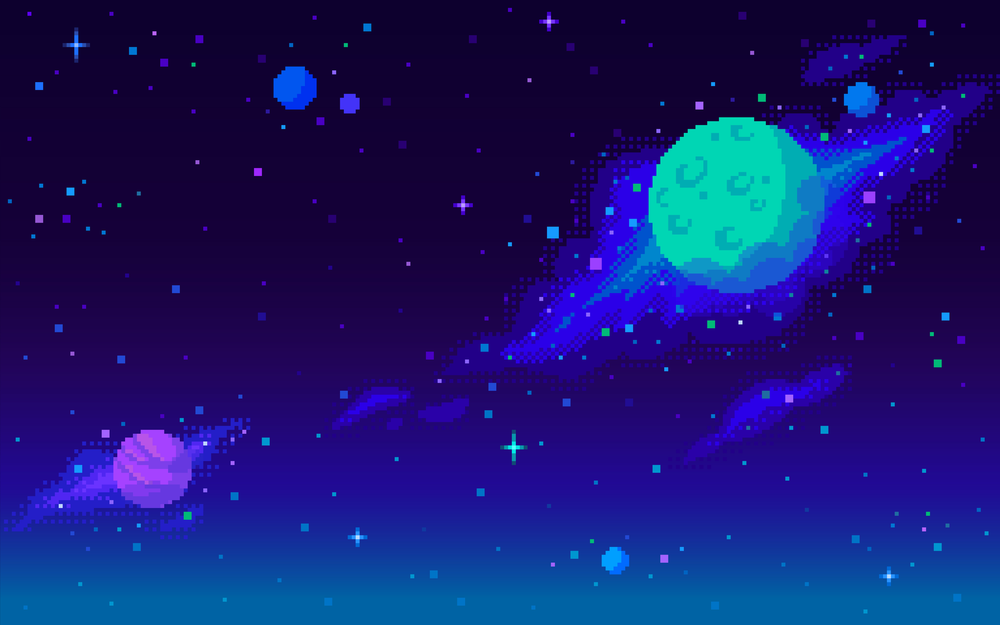

Hi, I'm Joran!
In high school, I took a woodworking course, where I learned technical drawing, designed furniture in both 2D and 3D, and even programmed CNC machines. That's where I developed a structured way of thinking: how things are built, how they function, and how everything fits together.
Later, I switched to applied computer science. Although programming itself wasn't quite my thing, it did give me a good understanding of how digital products work.
That combination eventually led me to digital design, where I found the perfect balance between logic, structure, and creativity. Through UI and UX, I realized that this is where I want to focus my efforts.

What attracts me most to UX is understanding how people interact with products and where things go wrong. I naturally analyze interfaces whether it's a website, an app, or even a game. When something feels off, I immediately start questioning why.
I'm especially driven by fixing frustrating experiences: unclear flows, unnecessary steps, and inconsistencies that break the user's trust. My goal is to grow into a UX-focused product designer who builds solutions based on research and real user insights not assumptions.
As I'm starting my career, I'm actively focused on building experience through projects and continuously improving my portfolio. I see this phase as an opportunity to refine how I think, work, and solve problems as a designer.

You'll usually find me in the mountains, going on hikes or just enjoying the calm that comes with it. It's something that helps me reset and think more clearly.

I also enjoy spending time with friends whether that's gaming in the evening or going out.

Recently, I've been getting more interested in astronomy. I even have a telescope, and I'm exploring more about what's out there beyond our planet.